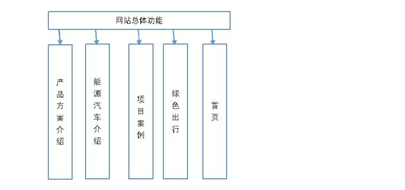
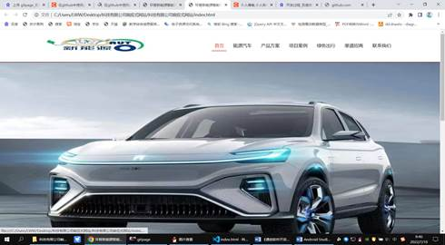
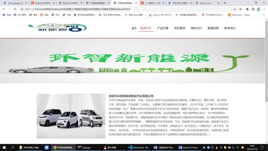
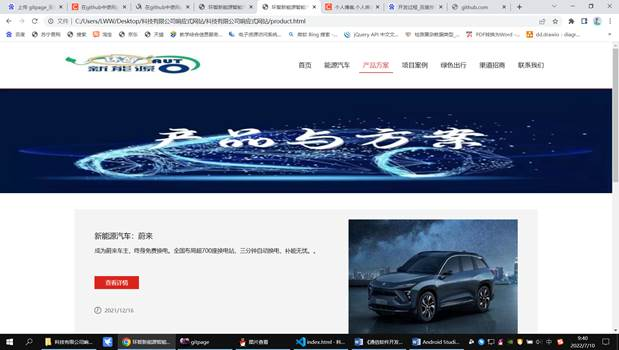
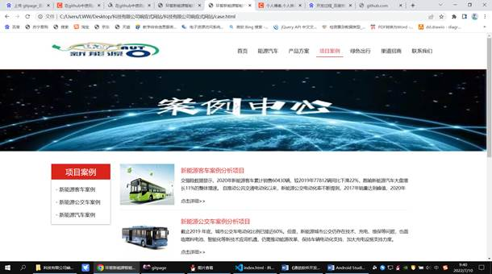
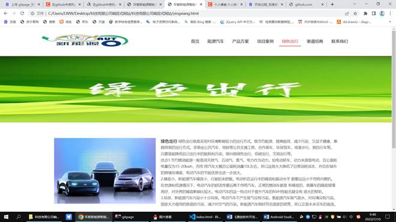

《通信软件开发与应用》课程结业报告
1 开发准备
1.1课程设计的目的
(1)学会网站开发的环境搭建与配置，并在实际运用中学习和掌握html和css开发的全过程。(2)进一步熟悉掌握html和css设计语言的基础内容，如用户图形界面设计(3)通过亲自动手写程序，一方面拓展知识面，一方面锻炼调试能力。
1.2本选题的内容要求
(1)问题的描述与程序将要实现的具体功能。(2)程序功能实现的具体设计思路或框架，并检查流程设计。(3)代码实现。(4)程序测试
1.3 软件开发运行环境
本软件集成开发环境: vscode
本软件运行环境: Windows 7 或 以上版本
2 软件开发过程
软件总体结构图
功能设计
首页模块：
左上方显示log，点击进入首页功能即可跳转，中间通过轮播图显示显示对应汽车图片

图2-1首页图
相关代码：
/*通用父子盒子嵌套浮动问题解决，结束*/
/*间隙层开始*/
.space_hx { /*横向间隙*/
clear: both;
width: 100%;
height: 20px;
font-size: 1px;
overflow: hidden;
}
.space_zx { /*纵向间隙*/
float: left;
width: 10px;
font-size: 1px;
overflow: hidden;
}
/*间隙层结束*/
显示能源汽车模块：
能源汽车界面显左边嵌入了汽车图片，中间通过两个div右边显示他所包含的介绍信息。字体标题采用加粗，内容为普通文本.

图2-2能源汽车图
相关代码：
<div class="about">
<img src="Assets/upload/bb.jpg" alt="" style="float:left; margin-right:20px;">
<b style="font-size:16px; margin-bottom:20px;">赤峰市环智新能源智能汽车有限公司</b>
<br/>
公司作为新能源汽车高效、节能、环保动力系统产品供应商和技术服务商，从整车设计、整车仿真、
</div>
产品方案功能 ：
显示方案产品设计信息

图2-3产品方案图
项目案例显示界面：
左边包含项目案例页面导航栏，通过点击不同案例可以跳转到对应案例，右面界面显示案例的详细信息。

图2-4项目案例界面图
相关代码：
<div class="scd scd_a clearfix">
<div class="scd_l">
<div class="name">项目案例</div>
<ul class="s_nav">
<li>
<a href=""> - 新能源客车案例</a>
</li>
<li>
<a href=""> - 新能源公交车案例</a>
</li>
<li>
<a href=""> - 新能源汽车案例</a>
</li>
</ul>
</div>
绿色出行显示界面
点击绿色出行导航栏跳转到对应界面，中间显示绿色出行介绍，上方logo为绿色出行的背景图片。

图2-5绿色出行显示界面
相关代码：
<b style="font-size:16px; margin-bottom:20px;">绿色出行</b>
绿色出行就是采用对环境影响较小的出行方式。既节约能源、提高能效、减少污染，又益于健康、兼顾效率的出行方式。多乘坐公共汽车、地铁等公共交通工具，合作乘车，环保驾车，或者步行、骑自行车等。
只要是能降低自己出行中的能耗和污染，就叫做绿色出行、低碳出行、文明出行等。
<br/>
3 问题分析
1.在首页点击对应的跳转地址从而显示不同的页面，在写相关代码的时候不知道用什么方法，通过查找资料，html标签中有href标签通过写入对应的url地址就可以进行对应跳转。
轮播图的跳转：
2.轮播图的设计，轮播图通过下面的按钮显示对应跳转到对应的图片信息，一个div对应显示图片，但是原来的图片做什么处理这是我思考的问题，最后通过查找资料，在别人的指导和自己的不断尝试下通过jquery的toggleClass类，打开和关闭某页面，从而能显示对应的图片div信息。相关代码如下：
buildControls : function () {
var base = this;
if (base.options.navigation === true || base.options.pagination === true) {
base.owlControls = $("<div class=\"owl-controls\"/>").toggleClass("clickable", !base.browser.isTouch).appendTo(base.$elem);
}
if (base.options.pagination === true) {
base.buildPagination();
}
if (base.options.navigation === true) {
base.buildButtons();
}
4 总结
本次设计还有不足之处，页面设计不够好看，运行时间启动太长，还有一些代码上的设计不够完善，与界面的交互不够灵活等，虽然本次课程设计是要求自己独立完成，但是，彼此还是脱离不了集体的力量，遇到问题和同学互相讨论交流。多和同学讨论。我们在做课程设计的过程中要不停的讨论问题，这样，我们可以尽可能的统一思想，这样就不会使自己在做的过程中没有方向，并且这样也是为了方便最后设计和在一起。讨论不仅是一些思想的问题，还可以深入的讨论一些技术上的问题，这样可以使自己的处理问题要快一些，少走弯路。多改变自己设计的方法，在设计的过程中最好要不停的改善自己解决问题的方法，这样可以方便自己解决问题通过这次毕业设计使我明白了自己原来知识还比较欠缺。自己要学习的东西还很多，学习是一个长期积累的过程，在以后的工作、生活中都应该不断的学习，努力提高自己的知识和综合素质。但从中我也学到了很多知识，更培养了我独立工作与思考的能力，激发了我的创新意识。使我充分体会到了在创造过程中的探索的艰难和成功的喜悦。虽然这个项目还不是很完善，但是在设计过程中所学到的东西是这次设计的最大收获和财富，使我终身受益。
老师，我大四毕业准备考研，现在在文都这边培训，差一点选修分，求放过谢谢